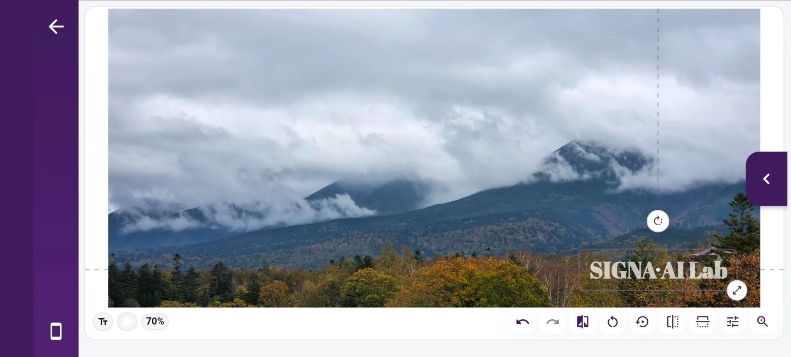
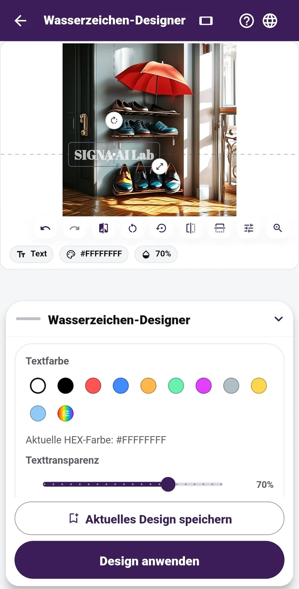

01 · WASSERZEICHEN · Kostenlos und beliebig oft Wasserzeichen setzen
Wasserzeichen für ganze Fotoserien
Schreib deinen Namen mit einer der mitgelieferten Schriften oder nimm dein eigenes Logo. Gestalte ein Logo aus deinen Initialen, fotografier deine Handschrift oder unterschreib direkt auf dem Display. Schrift, Farbe und Deckkraft kannst du frei einstellen. Größe und Position legst du für jedes Foto fest. Deinen Entwurf kannst du fürs nächste Mal speichern. Mit dem Schalter für das SIGNA-Signal kannst du beide Markierungen kombinieren.
Bearbeite bis zu 12 Fotos auf einmal. Lass dir für jedes Bild eine Position vorschlagen, passe sie an oder mach den Vorschlag rückgängig.
Hoch- und Querformat · Bis zu zwölf Fotos · Platzierung pro Bild · Gespeicherte Vorlagen · Weitere Schriften mit Pro
 App-Ansicht vergrößern ↗
App-Ansicht vergrößern ↗

